1.编写：编写的Java代码保存在以“.java”结尾的源文件中。
2.编译：使用javac.exe命令编译java源文件，生成字节码文件。格式：javac 源文件名.java
3.运行：使用java.exe命令解释运行字节码文件。格式：java 类名
4.在一个java源文件中可以声明多个class，但是只能最多有一个类声明为public，而且被声明为public的类的类名必须与源文件名相同。
5.java关键字中所有字母都为小写
6.Java中的名称命名规范：包名：多单词组成时所有字母都小写：xxxyyyzzz 类名、接口名：多单词组成时，所有单词的首字母大写：XxxYyyZzz变量名、方法名：多单词组成时，第一个单词首字母小写，第二个单词开始每个 单词首字母大写：xxxYyyZzz常量名：所有字母都大写。多单词时每个单词用下划线连接：XXX_YYY_ZZZ
7.字符串是属于一个类，属于引用数据类型

8.在类体内，在方法体外声明的变量称为成员变量。
9.在方法体内部声明的变量称为局部变量。局部变量除形参外，需显式初始化才能使用。（形参也是局部变量）
10.java的整型常量默认为 int 型，声明long型常量须后加‘l’或‘L’。
11.Java的浮点型常量默认为double型，声明float型常量，须后加‘f’或‘F’。
12.Java中的所有字符都使用Unicode编码，一个字符可以存储一个字母，一个汉字，所以java中char类型是两个字节。
13.boolean类型数据只允许取值true和false，无null。不可以使用0或非 0 的整数替代false和true。Java虚拟机中没有任何供boolean值专用的字节码指令，Java语言表达所操作的 boolean值，在编译之后都使用java虚拟机中的int数据类型来代替：true用1表示，false 用0表示。
14.虽然long类型是8个字节，float是4个字节，但是float类型采用科学计数法存储，所以float类型的存储范围比long类型更大。
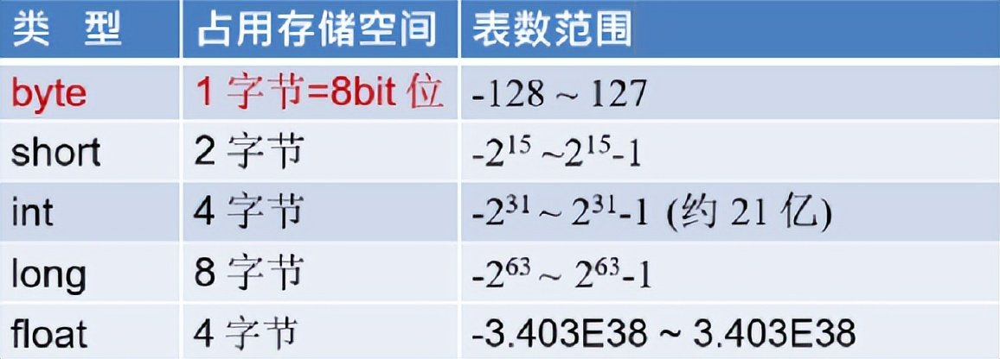
15.自动类型转换：容量小的类型自动转换为容量大的数据类型。byte,short,char之间不会相互转换，他们三者在计算时首先转换为int类型。
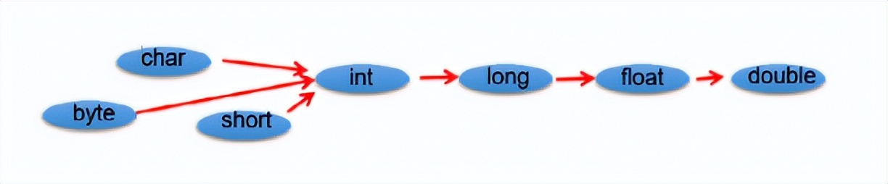
16.强制类型转换：将容量大的数据类型转换为容量小的数据类型，但可能造成精度降低或溢出。
17.字符串不能直接转换为基本类型，但通过基本类型对应的包装类则可以实现把字符串转换成基本类型。
18.计算机底层都以二进制补码的方式来存储数据。
19.正数（最高位是0）的原码、反码、补码都相同，负数（最高位是1）的补码是其反码+1。
20.赋值运算符：= += -= *= /= %=，运算的结果不会改变变量本身的数据类型。short i = i + 1；由于常量“1”默认是int型的，所以编译会报错，使用short i += 1，则做到了+1的作用，也没有改变数据类型。
21.&与&&、| 与 || 的区别：&&、|| 具备短路功能，左边的条件成立或者不成立，右边的条件不用再判断，&、| 不管什么情况，都要把所有条件判断完。
22.位运算：位运算符操作的都是整型的数据。（左移运算符）<< ：在一定范围内，每向左移1位，相当于 * 2（右移运算符）>> ：在一定范围内，每向右移1位，相当于 / 2
23.流程控制：顺序结构：程序从上到下执行。分支结构：if - else、switch-case循环结构：for、while、do-while
24.数组属于引用数据类型变量，但是数组的元素既可以是基本数据类型，也可以是引用数据类型。
25.数组的长度一旦确定就不能修改，初始化完成，长度就定了。
26.数组静态初始化：数组元素的初始化和数组元素的赋值同时进行。例如：int a[ ] = new int [ ] { 1,2,3 };
27.数组动态初始化：数组元素的初始化和数组元素的赋值分开进行。例如：int b[ ] = new int [5]; b[0] = 1 ;
28.数组元素的默认初始化值：整型：0浮点型：0.0字符型：0或者’\u0000’，而非’0’布尔类型：false引用数据类型：null
29.关键字 break、continue 可以带标签使用（类似于C语言的goto语句）break label;//结束指定标识的一层循环结构。continue label;//结束指定标识的一层循环结构当次循环。
30.面向对象vs面向过程面向过程：强调的是功能行为，以函数为最小单位，考虑怎么做。面向对象：强调具备了功能的对象，以类/对象为最小单位，考虑谁来做。
31.面向对象中两个重要的概念：类：对一类事物的描述，是抽象的、概念上的定义对象：是实际存在的该类事物的每个个体，因而也称为实例(instance)
32.虚拟机栈，即为平时提到的栈结构。局部变量存储在栈结构中；new出来的结构（比如：数组、对象）加载在堆空间中。
补充：对象的属性（非static的成员变量）也是加载在堆空间中。int arr [ ] = new arr [ ]，以等号“=”为界，左边是局部变量存放在栈，右边是new 的机构，存放在堆中。
方法区：类的加载信息、常量池、静态域
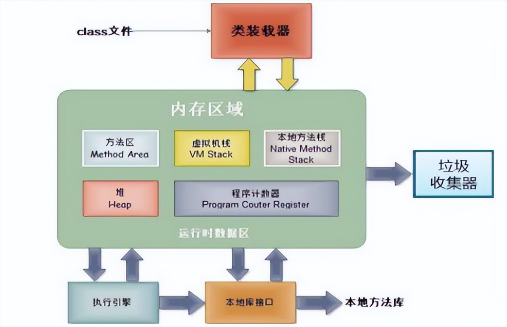
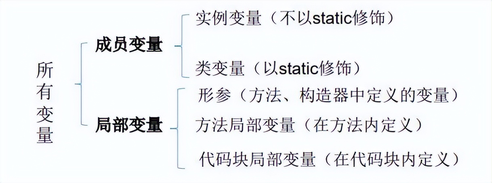
33.“属性”与“变量”的区别：
① 在类中声明的位置的不同属性：
直接定义在类的一对{}内。局部变量：声明在方法内、方法形参、代码块内、构造器形参、构造器内部的变量。
② 关于权限修饰符的不同属性：
可以在声明属性时，指明其权限，使用权限修饰符。常用的权限修饰符：private、public、缺省、protected —>体现为封装性。局部变量：不可以使用权限修饰符。
③ 默认初始化值的情况属性：
类的属性，根据其类型，都默认初始化值。整型（byte、short、int、long：0）、浮点型（float、double：0.0）、字符型（char：0 （或’\u0000’））、布尔型（boolean：false）、引用数据类型（类、数组、接口：null）局部变量：没默认初始化值。意味着，我们在调用局部变量之前，一定要显式赋值。特别地：形参在调用时，我们赋值即可。
④ 在内存中加载的位置属性：
加载到堆空间中 （非static）。局部变量：加载到栈空间。
34.如果方法没返回值，“return;”表示结束此方法的意思。
35.封装性思想具体的代码体现：
① 将类的属性xxx私化（private），同时，提供公共的（public）方法来获取（getXxx）和设置（setXxx）此属性的值；
② 不对外暴露的私有的方法；
③ 单例模式（将构造器私有化）；
④ 如果不希望类在包外被调用，可以将类设置为缺省的；
36.权限修饰符的范围：
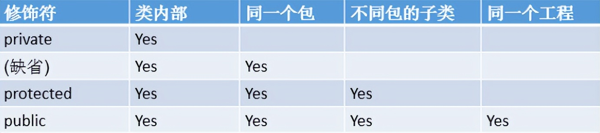
37.4种权限都可以用来修饰类的内部结构：属性、方法、构造器、内部类。修饰类的话，只能使用：缺省、public。
38.如果没显式的定义类的构造器的话，则系统默认提供一个空参的构造器。
39.一个类中定义的多个构造器，彼此构成重载。
40.一旦我们显式的定义了类的构造器之后，系统就不再提供默认的空参构造器。
41.一个类中，至少会有一个构造器。
42.this可以理解为：当前对象或当前正在创建的对象。
43.可以显式的使用"this(形参列表)"方式，调用本类中指定的其他构造器，但是构造器中不能通过"this(形参列表)"方式调用自己（死循环）。
44.规定："this(形参列表)“必须声明在当前构造器的首行，可以推出构造器内部，最多只能声明一个"this(形参列表)”，用来调用其他的构造器。
45.如果使用的类或接口是java.lang包下定义的，则可以省略import结构。使用"xxx.*"方式表明可以调用xxx包下的所有结构。但是如果使用的是xxx子包下的结构，则仍需要显式导入。
46.一个类可以被多个子类继承（一个爸爸可以有多个儿子），但是一个类只能有一个父类（一个儿子只能有一个亲生爸爸）
47.子类继承父类以后有哪些不同？一旦子类A继承父类B以后，子类A中就获取了父类B中声明的所有的属性和方法。特别的，父类中声明为private的属性或方法，子类继承父类以后，仍然是获取了父类中私的结构，只因为封装性（private权限修饰符）的影响，使得子类不能直接调用父类的结构而已。子类继承父类以后，还可以声明自己特有的属性或方法：实现功能的拓展。
48.子类直接继承的父类，称为：直接父类。间接继承的父类称为：间接父类。子类继承父类以后，就获取了直接父类以及所有间接父类中声明的属性和方法。
49.如果没有显式的声明一个类的父类的话，则此类继承于java.lang.Object类。
50.方法的重写(override 或 overwrite)。
子类继承父类以后，可以对父类中同名同参数的方法，进行覆盖操作。
51.重写的规则：
① 子类重写的方法的方法名和形参列表与父类被重写的方法的方法名和形参列表相同。
② 子类重写的方法的权限修饰符不小于父类被重写的方法的权限修饰符
特殊情况：子类不能重写父类中声明为private权限的方法。
③ 返回值类型：
父类被重写的方法的返回值类型是void，则子类重写的方法的返回值类型只能是void。
父类被重写的方法的返回值类型是A类型，则子类重写的方法的返回值类型可以是A类或A类的子类。
父类被重写的方法的返回值类型是基本数据类型(比如：double)，则子类重写的方法的返回值类型必须是相同的基本数据类型(必须也是double)。
④ 子类重写的方法抛出的异常类型不大于父类被重写的方法抛出的异常类型。
52.什么是重写和什么是重载？
重载：是指存在多个同名方法，而这些方法的参数不同，编译器根据方法不同的参数表，对同名方法的名称做修饰，对于编译器而言，这些同名方法就成了不同的方法。它们的调用地址在编译期就绑定了。Java的重载是可以包括父类和子类的，即子类可以重载父类的同名不同参数的方法。所以，对于重载而言，在方法调用之前，编译器就已经确定了所要调用的方法，这称为“早绑定”或“静态绑定”。
重写：方法重写的前提是发生在具有继承关系的两个类之间，只等到方法调用的那一刻，解释运行器才会确定所要调用的具体方法，这称为“晚绑定”或“动态绑定”。
53.super调用属性、方法：① 在子类的方法或构造器中，通过使用"super.属性"或"super.方法"的方式，显式的调用父类中声明的属性或方法，通常情况下，习惯省略"super."。
② 特殊情况：当子类和父类中定义了同名的属性时，要想在子类中调用父类中声明的属性，则必须显式的使用"super.属性"的方式，表明调用的是父类中声明的属性。
③ 特殊情况：当子类重写了父类中的方法以后，想在子类的方法中调用父类中被重写的方法时，则必须显式的使用"super.方法"的方式，表明调用的是父类中被重写的方法。
54.super调用构造器：① 我们可以在子类的构造器中显式的使用"super(形参列表)"的方式，调用父类中声明的指定的构造器。
② "super(形参列表)"的使用，必须声明在子类构造器的首行！
③ 我们在类的构造器中，针对于"this(形参列表)"或"super(形参列表)"只能二选一，不能同时出现。
④ 在构造器的首行，没显式的声明"this(形参列表)“或"super(形参列表)”，则默认调用的是父类中空参的构造器：super()。
⑤ 在类的多个构造器中，至少一个类的构造器中使用了"super(形参列表)"，调用父类中的构造器。
55.子类对象实例化过程：从结果上看，子类继承父类以后，就获取了父类中声明的属性或方法，创建子类的对象，就会在堆空间中加载父类中声明的属性。
从过程上看：通过子类的构造器创建子类对象时，一定会直接或间接的调用其父类的构造器，进而调用父类的父类的构造器，直到调用了java.lang.Object类中空参的构造器为止。正因为加载过所有的父类的结构，所以才可以看到内存中父类中的结构，子类对象才可以考虑进行调用。
56.多态性：可以理解为一个事物的多种形态。对象的多态性：父类的引用指向子类的对象（或子类的对象赋给父类的引用），Person p = new Man(); 。有了对象的多态性以后，我们在编译期，只能调用父类中声明的方法，但在运行期，我们实际执行的是子类重写父类的方法。总结：编译，看左边；运行，看右边。多态运行时行为，不是编译时行为。
57.对象的多态性，只适用于方法，不适用于属性（编译和运行都看左边）。
58.Object类中定义的equals()和==的作用是相同的：比较两个对象的地址值是否相同,即两个引用是否指向同一个对象实体。
59.String、Date、File、包装类等都重写了Object类中的equals()方法。重写以后，比较的不是两个引用的地址是否相同，而是比较两个对象的"实体内容"是否相同。
60.“==”如果比较的是基本数据类型变量，则比较两个变量保存的数据是否相等。（不一定类型要相同，有自动类型提升）如果比较的是引用数据类型变量，则比较两个对象的地址值是否相同，即两个引用是否指向同一个对象实体。
61.当我们输出一个对象的引用时，实际上就是调用当前对象的toString()。
62.Object类中toString()的定义：
public String toString() {
return getClass().getName() + “@” + Integer.toHexString(hashCode());
}
63.像String、Date、File、包装类等都重写了Object类中的toString()方法，使得在调用对象的toString()时，返回"实体内容"信息。
64.基本数据类型与对应的包装类：
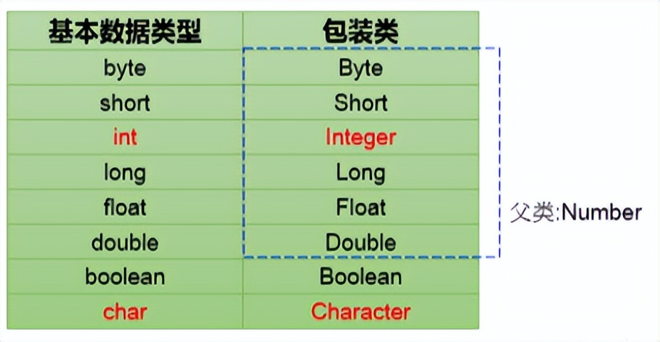
65.自动装箱和自动拆箱（JDK 5.0之后）
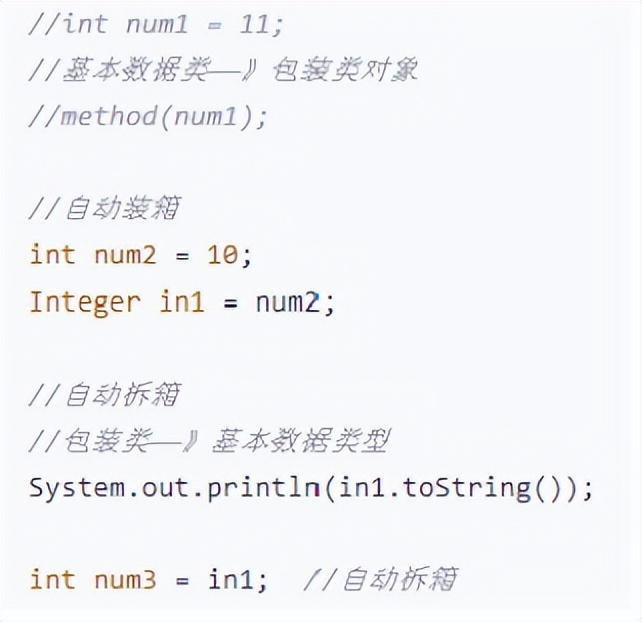
66.static关键字可以用来修饰属性、方法、代码块、内部类。
67.静态变量 vs 实例变量
静态变量：创建了类的多个对象，多个对象共享同一个静态变量。当通过某一个对象修改静态变量时，会导致其他对象调用此静态变量时，变量的值是修改过了的。
实例变量：创建了类的多个对象，每个对象都独立拥有一套类中的非静态属性。当修改其中一个对象中的非静态属性时，不会导致其他对象中同样的属性值的修改。
68.static修饰属性的说明：① 静态变量随着类的加载而加载，可以通过"类.静态变量"的方式进行调用。
② 静态变量的加载要早于对象的创建。
③ 由于类只会加载一次，则静态变量在内存中也只会存在一份：存在方法区的静态域中。
69.static修饰方法的说明：① 随着类的加载而加载，可以通过"类.静态方法"的方式进行调用。
② 静态方法中，只能调用静态的方法或属性。非静态方法中，既可以调用非静态的方法或属性，也可以调用静态的方法或属性。
70.在静态的方法内，不能使用this关键字、super关键字（生命周期）。静态属性和静态方法的使用，都可以从生命周期的角度去理解。
71.单例设计模式：就是采取一定的方法保证在整个的软件系统中，对某个类只能存在一个对象实例。
代码实现一：
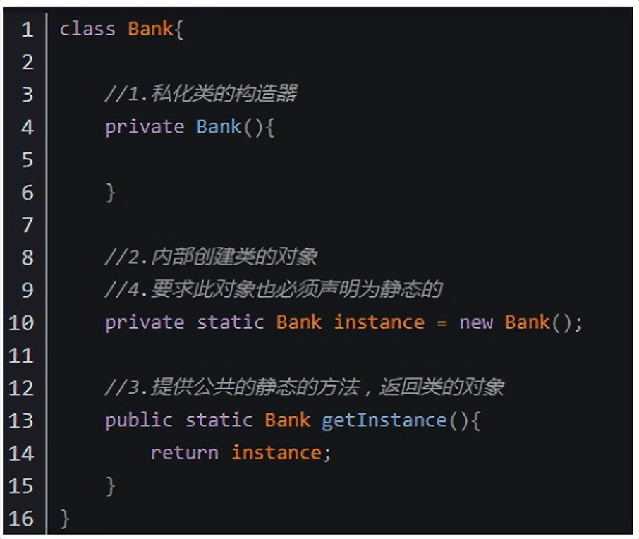
好处：线程安全。
坏处：对象加载时间过长。
代码实现二：
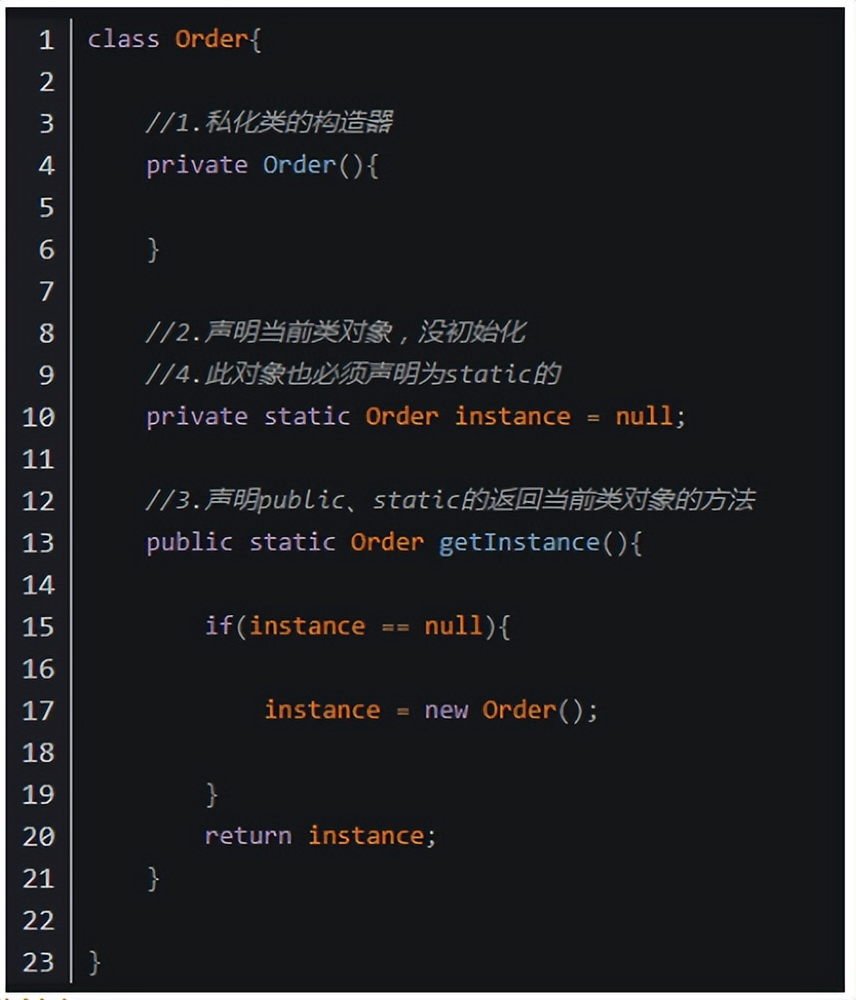
好处：延迟对象的创建。
坏处：线程不安全。
72.静态代码块使用说明：
① 内部可以输出语句
② 随着类的加载而执行,而且只执行一次
③ 作用：初始化类的信息
④ 如果一个类中定义了多个静态代码块，则按照声明的先后顺序执行
⑤ 静态代码块的执行要优先于非静态代码块的执行
⑥ 静态代码块内只能调用静态的属性、静态的方法，不能调用非静态的结构
73.非静态代码块使用说明：
① 内部可以输出语句
② 随着对象的创建而执行
③ 每创建一个对象，就执行一次非静态代码块
④ 作用：可以在创建对象时，对对象的属性等进行初始化
⑤ 如果一个类中定义了多个非静态代码块，则按照声明的先后顺序执行
⑥ 非静态代码块内可以调用静态的属性、静态的方法，或非静态的属性、非静态的方法
74.实例化子类对象时，涉及到父类、子类中静态代码块、非静态代码块、构造器的加载顺序：由父及子，静态先行。
75.属性的赋值顺序：
① 默认初始化
② 显式初始化/⑤ 在代码块中赋值
③ 构造器中初始化
④ 有了对象以后，可以通过"对象.属性"或"对象.方法"的方式，进行赋值执行的先后顺序：① - ② / ⑤ - ③ - ④
76.final的使用说明：
① final可以用来修饰的结构：类、方法、变量
② final 用来修饰一个类:此类不能被其他类所继承。比如：String类、System类、StringBuffer类
③ final 用来修饰方法：表明此方法不可以被重写，比如：Object类中getClass();
④ final 用来修饰变量：此时的"变量"就称为是一个常量
⑤ final修饰属性：可以考虑赋值的位置有：显式初始化、代码块中初始化、构造器中初始化
⑥ final修饰局部变量：尤其是使用final修饰形参时，表明此形参是一个常量。当我们调用此方法时，给常量形参赋一个实参。一旦赋值以后，就只能在方法体内使用此形参，但不能进行重新赋值。
⑦ static final 用来修饰属性：全局常量
77.abstract可以用来修饰：类、方法。
abstract修饰类：抽象类
① 此类不能实例化。
② 抽象类中一定有构造器，便于子类实例化时调用（涉及：子类对象实例化的全过程）。
abstract修饰方法：抽象方法
① 抽象方法只有方法的声明，没方法体。
② 包含抽象方法的类，一定是一个抽象类。反之，抽象类中可以没有抽象方法的。
③ 若子类重写了父类中的所的抽象方法后，此子类方可实例化。
④ 若子类没重写父类中的所有的抽象方法，则此子类也是一个抽象类，需要使用abstract修饰
注意点：abstract不能用来修饰：属性、构造器等结构；abstract不能用来修饰私有方法、静态方法、final的方法、final的类。
78.接口使用interface来定义，Java中，接口和类是并列的两个结构。
79.JDK7及以前：只能定义全局常量和抽象方法
全局常量：public static final的.但是书写时，可以省略不写
抽象方法：public abstract的
JDK8：除了定义全局常量和抽象方法之外，还可以定义静态方法、默认方法
80.接口中不能定义构造器的！意味着接口不可以实例化。
81.Java开发中，接口通过让类去实现(implements)的方式来使用。如果实现类覆盖了接口中的所抽象方法，则此实现类就可以实例化。如果实现类没覆盖接口中所的抽象方法，则此实现类仍为一个抽象类。
82.Java类可以实现多个接口 —>弥补了Java单继承性的局限性格式：class AA extends BB implements CC,DD,EE。
83.接口与接口之间可以继承，而且可以多继承。如下：
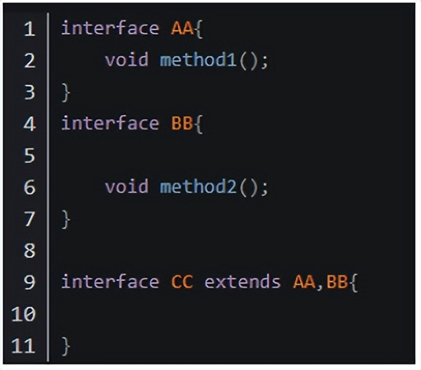
84.接口使用上也满足多态性，接口，实际上就是定义了一种规范，下面这个例子可以帮你深刻理解并记住接口！
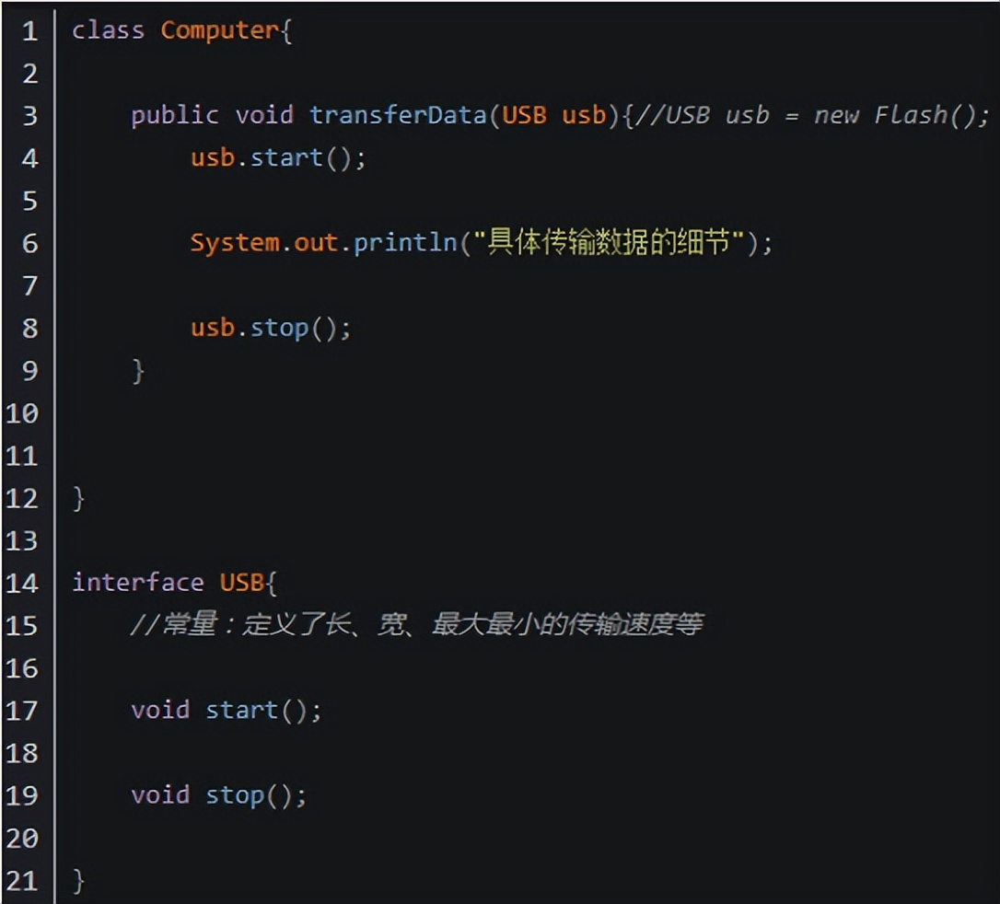
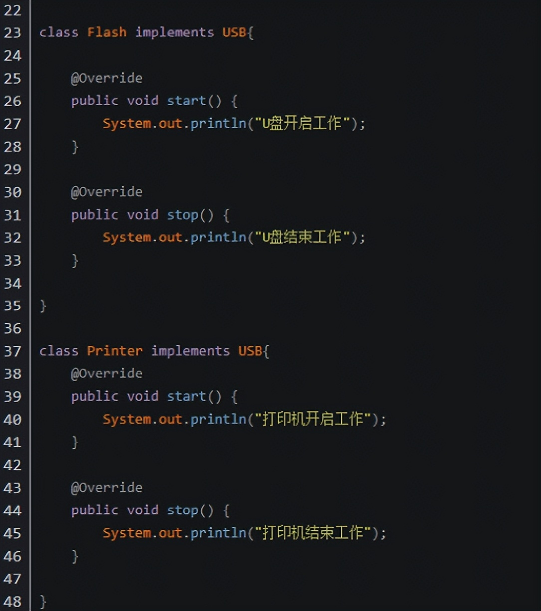
85.Java中关于接口的新规范
① 接口中定义的静态方法，只能通过接口来调用。
② 通过实现类的对象，可以调用接口中的默认方法。如果实现类重写了接口中的默认方法，调用时，仍然调用的是重写以后的方法。
③ 如果子类(或实现类)继承的父类和实现的接口中，声明了同名同参数的默认方法，那么子类在没重写此方法的情况下，默认调用的是父类中的同名同参数的方法。–>类优先原则。
④ 如果实现类实现了多个接口，而这多个接口中定义了同名同参数的默认方法，那么在实现类没重写此方法的情况下，报错。–>接口冲突。这就需要我们必须在实现类中重写此方法。
⑤ 如何在子类(或实现类)的方法中调用父类、接口中被重写的方法。
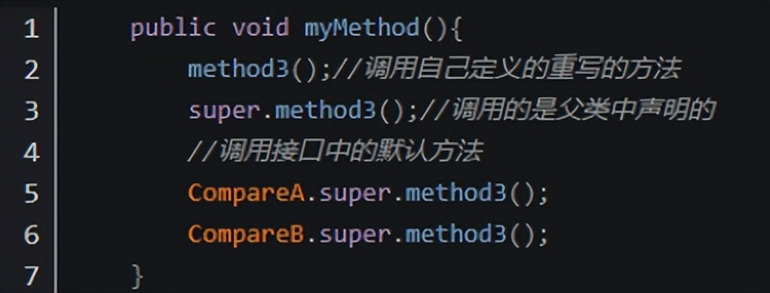
86.内部类的分类：成员内部类（静态、非静态 ）、局部内部类(方法内、代码块内、构造器内)。
87.成员内部类的理解：① 一方面，作为外部类的成员调用外部类的结构，可以被static修饰，可以被4种不同的权限修饰。
② 另一方面，作为一个类类内可以定义属性、方法、构造器等可以被final修饰，表示此类不能被继承。言外之意，不使用final，就可以被继承可以被abstract修饰。
88.如何在外部类创建成员内部类的对象？(静态的，非静态的)
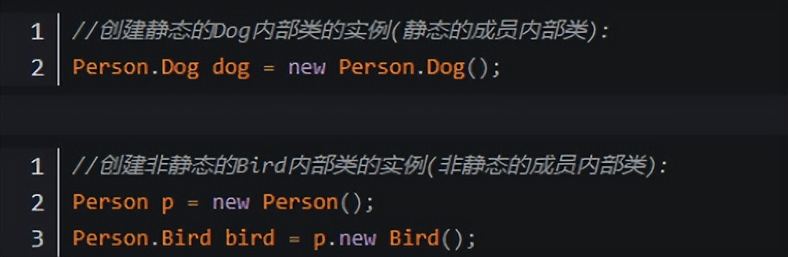
89.如何在成员内部类中调用外部类的结构？
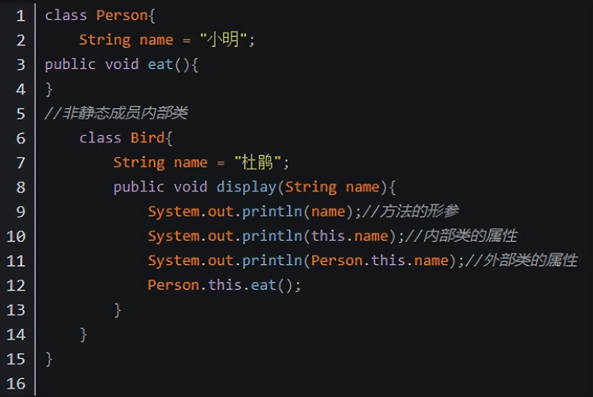
90.在局部内部类的方法中(比如：show) ，如果调用局部内部类所声明的方法 *(比如：method)中的局部变量(比如：num)的话， *要求此局部变量声明为final的。
91.jdk 7及之前版本：要求此局部变量显式的声明为final。jdk 8及之后的版本：可以省略final的声明
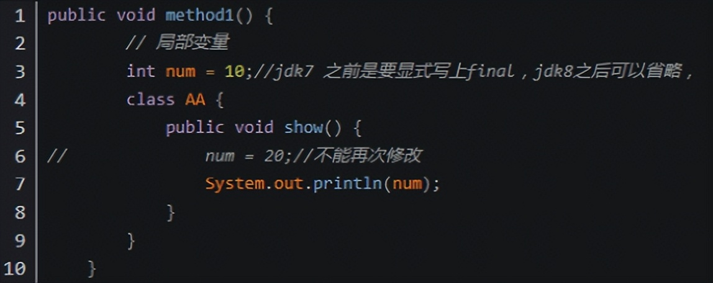
92.java异常处理的抓抛模型——“抛”：程序在正常执行的过程中，一旦出现异常，就会在异常代码处，生成一个对应异常类的对象，并将此对象抛出。一旦抛出对象以后，其后的代码就不再执行。
93.关于异常对象的产生：① 系统自动生成的异常对象② 手动的生成一个异常对象，并抛出（throw）。
94.“抓”：可以理解为异常的处理方式：① try-catch-finally② throws
95.异常处理模板：
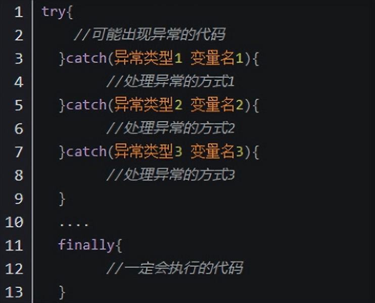
注意点：① finally是可选的。
② 使用try将可能出现异常代码包装起来，在执行过程中，一旦出现异常，就会生成一个对应异常类的对象，根据此对象的类型，去catch中进行匹配。
③ 一旦try中的异常对象匹配到某一个catch时，就进入catch中进行异常的处理。一旦处理完成，就跳出当前的try-catch结构（在没写finally的情况，继续执行其后的代码。）
④ catch中的异常类型如果没子父类关系，则谁声明在上，谁声明在下无所谓。catch中的异常类型如果满足子父类关系，则要求子类一定声明在父类的上面。否则报错。
⑤ 常用的异常对象处理的方式：⑴ String getMessage() ⑵ printStackTrace()
⑥ 在try结构中声明的变量，再出了try结构以后，就不能再被调用。
⑦ try-catch-finally结构可以嵌套。
⑧ finally中声明的是一定会被执行的代码。即使catch中又出现了异常，try中出现了return语句，catch中出现了return语句等情况。
96."throws + 异常类型"写在方法的声明处。指明此方法执行时，可能会抛出的异常类型。throws的方式只是将异常抛给了方法的调用者。并没真正将异常处理掉。
97.如果父类中被重写的方法没用throws方式处理异常，则子类重写的方法也不能使用throws，意味着如果子类重写的方法中异常，必须使用try-catch-finally方式处理。
98.子类重写的方法抛出的异常类型，不大于父类被重写的方法抛出的异常类型。
99.在程序执行中，除了自动抛出异常对象的情况之外，我们还可以手动的throw一个异常类的对象。
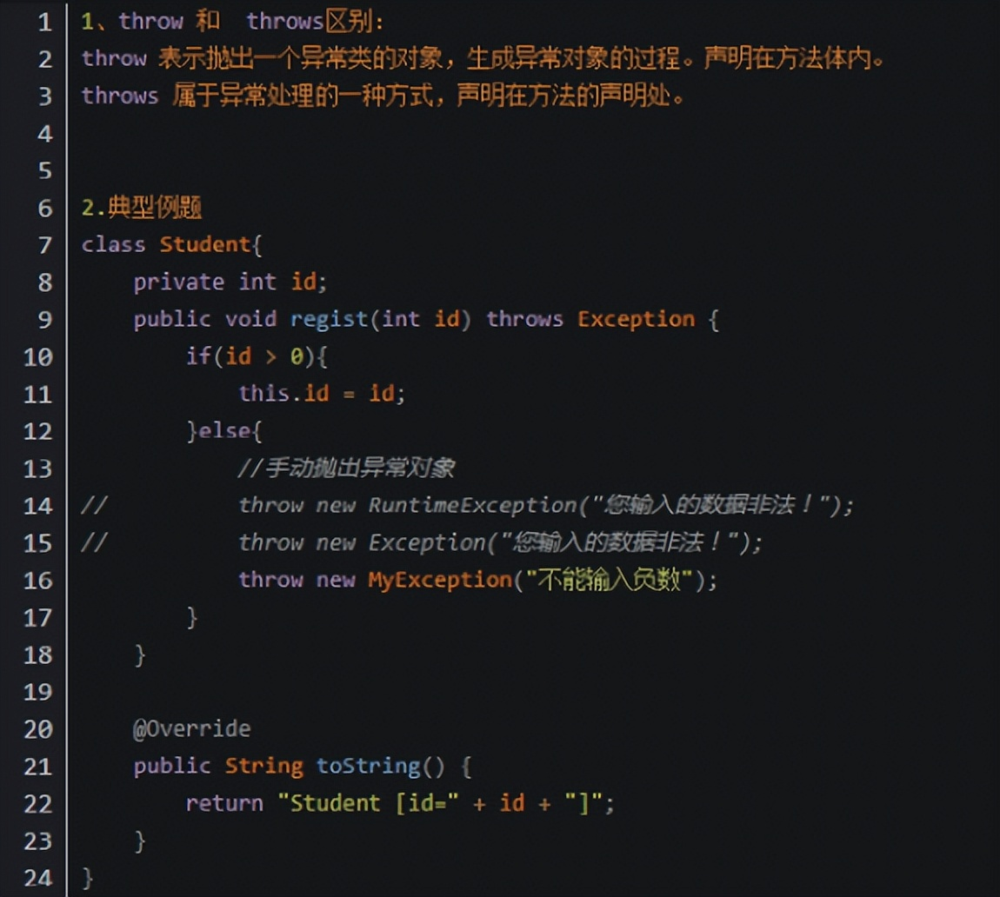
100.如何自定义一个异常类？
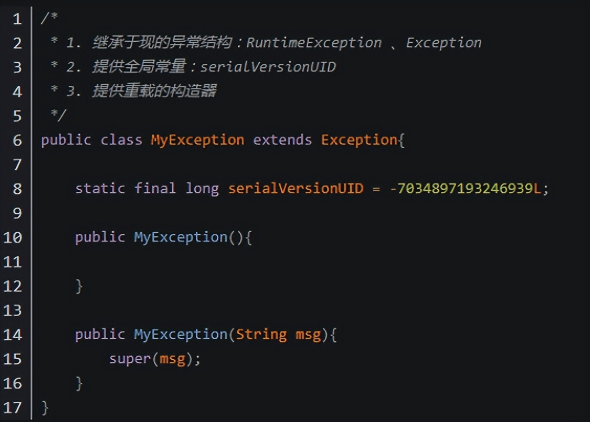
-End-